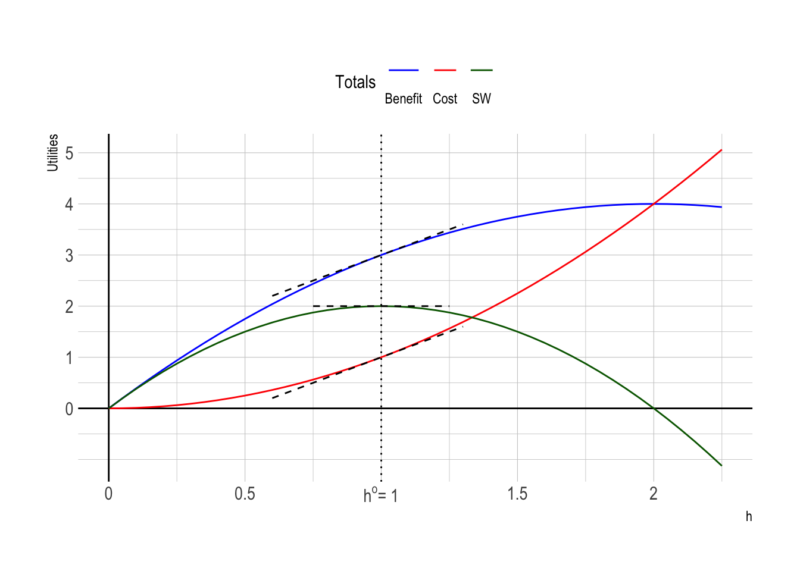
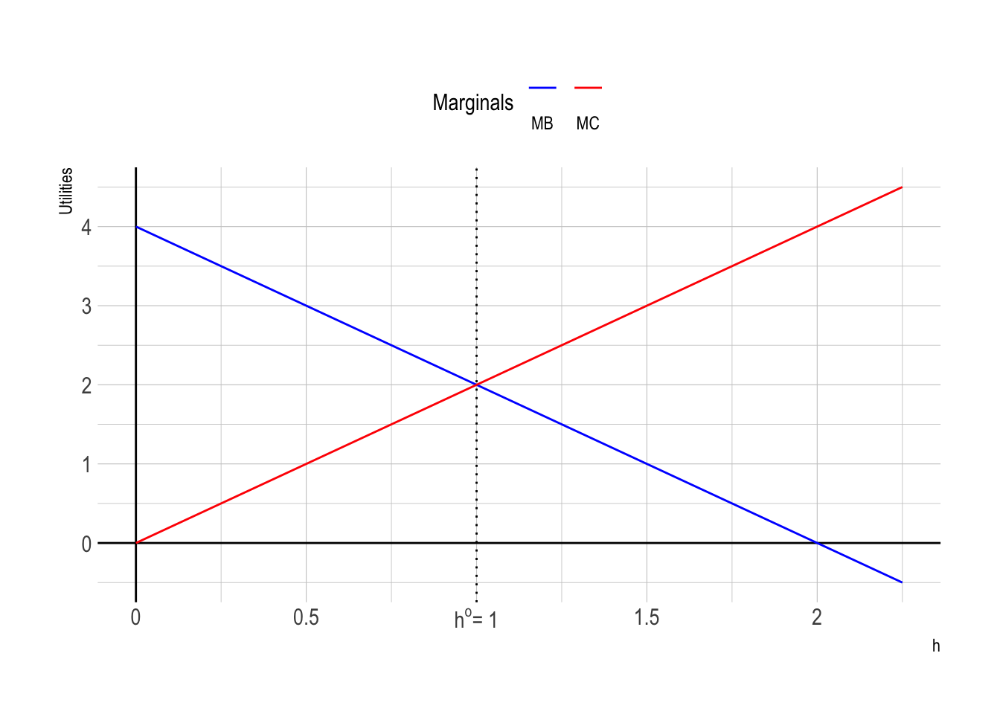
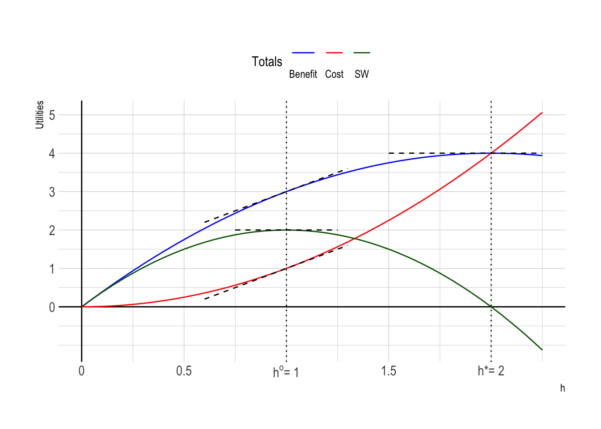
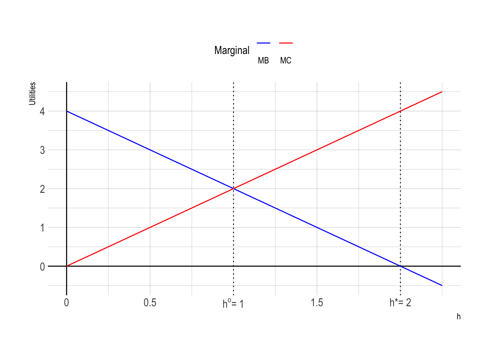
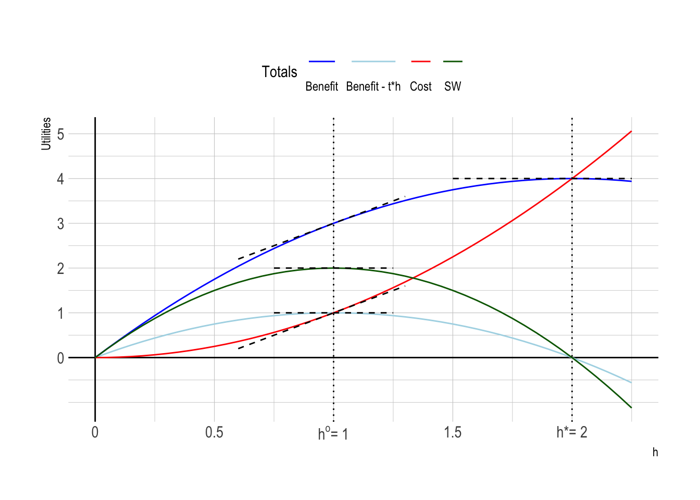
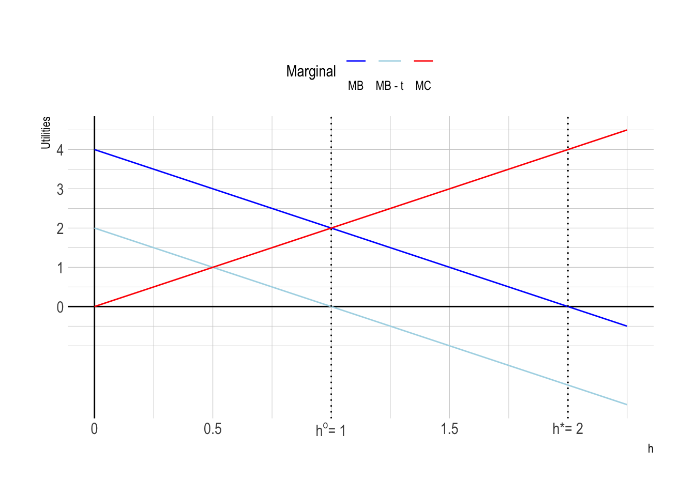
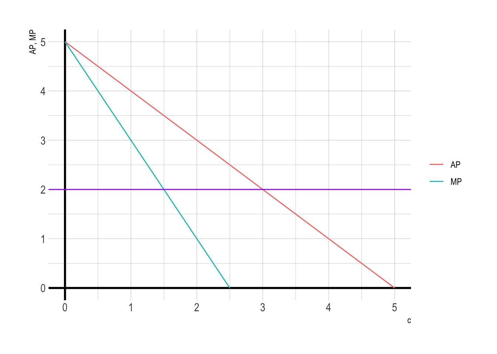

ECON 340: Homework Assignment 1
Question 1. Negative Externalities I
Consider a society with just two consumers. Consumer 1 can get positive utility from a positive amount of some activity \(h\) that she chooses the level of, but consumer 2 gets negative utility from that activity. We can think of \(h\) as some non-market good, for example, “hours” of loud music played by consumer 1, disturbing consumer 2’s peace and quiet. Consumer 1 therefore imposes a negative externality on consumer 2. Assume there is no other cost associated with the activity.
Assume that both consumers gain utilities from consuming a numeraire good \(x\), whose price is 1, but may have different incomes \(Y_{1}\) and \(Y_{2}\).
- Consumer 1’s utility is \(U_{1} = x_{1} + h(4-h)\).
- Consumer 2’s utility is \(U_{2} = x_{2} - h^{2}\).
Q1a.
- Under the efficiency standard, what is the socially optimal level of \(h^{o}\)?
Answer:
The social welfare function is \[
\begin{align}
SW &= U_{1} + U_{2}\\
&= x_{1} + x_{2} + h(4-h) - h^{2}.
\end{align}
\]
To derive the socially optimal level of \(h^{o}\), we should consider the Social Planner’s problem. In Classwork 4, we discussed what the Social Planner does:
Social planner maximizes social welfare subject to resource constraint.
The Social Planner’s problem refers to a scenario where a central authority (the Social Planner) seeks to allocate resources in a way that maximizes social welfare, subject to available resources, which is described by the resource constraint.
The optimal allocation of resources obtained from the Social Planner’s problem plays an important role in making public policy work. It is a benchmark that the government wants to achieve by implementing public policy.
The socially optimal level of \(h^{o}\) alongside the socially optimal levels of \(x_{1}^{o}\) and \(x_{2}^{o}\) maximizes \(SW^{o} = SW(x_{1}^{o},x_{2}^{o},h^{o})\).
The Social Planner solves problem (SP-1) subject to resource constraint (RC):
\[ \begin{align} \max_{x_{1}, x_{2}, h} \;&SW = x_{1} + x_{2} + h(4-h) - h^{2}\tag{SP-1}\\ \text{subject to}\quad &Y_{1} + Y_{2} = x_{1} + x_{2}\tag{RC} \end{align} \]
Substituting \(x_{1} + x_{2}\) in the \(SW\) using (RC) gives:
\[ \begin{align} \max_{h} \;SW &= Y_{1} + Y_{2} + h(4-h) - h^{2}\tag{SP-2} \end{align} \]
first-order condition for problem (SP-2) is
\[ \frac{d SW}{d h} = 4 - 4h = 0 \] Therefore, \(h^{o} = 1\) and \(\{(x_{1}^{o}, x_{2}^{o}): Y_{1} + Y_{2} = x_{1}^{o} + x_{2}^{o}\}\).
- Plot graphs in \((h, \$)\) space, both total and average/marginal, to illustrate the solution.
Answer:
- Dividing \(SW(h)\) into benefit ( \(B(h) = h(4-h)\) ) and cost ( \(C(h) = h^{2}\) ) is useful:
\[ SW(h) = B(h) - C(h). \] Here we disregard numeraire goods and incomes.


At \(h = h^{o} = 1\), where \(MB(h^{o}) = MC(h^{o})\), \(SW(h^{o})\) is maximized.
Q1b.
- Derive the market level \(h^{*}\) of the activity that results if choosing it is left up to consumer 1, and show that this level differs from \(h^{o}\).
Answer:
In the market, each single economic agent maximizes his/her own utility.
Consumer 1 solves problem (C-1-cons) subject to budget constraint (BC-1):
\[ \begin{align} \max_{x_{1}, h} \;&U_{1} = x_{1} + h(4-h) \tag{C-1-cons}\\ \text{subject to}\quad &Y_{1} = x_{1} \tag{BC-1} \end{align} \]
Substituting \(x_{1}\) in the \(U_{1}\) using (BC-1) gives \(x_{1}^{*} = Y_{1}\) and:
\[ \begin{align} \max_{h} \;U_{1} &= Y_{1} + h(4-h) \tag{C-1-uncons} \end{align} \]
first-order condition for problem (C-1-uncons) is
\[ \frac{d U_{1}}{d h} = 4 - 2h = 0 \] Therefore, \(h^{*} = 2\).
Consumer 2 solves problem (C-2-cons) subject to budget constraint (BC-2):
\[ \begin{align} \max_{x_{2}} \;&U_{2} = x_{2} - h^{2} \tag{C-2-cons}\\ \text{subject to}\quad &Y_{2} = x_{2} \tag{BC-2} \end{align} \]
Substituting \(x_{2}\) in the \(U_{2}\) using (BC-2) gives \(x_{2}^{*} = Y_{2}\).
- Add \(h^{*}\) to your graphs.


- At \(h = h^{*} = 2\), where \(MB(h^{*}) = 0\), consumer 1’s benefit \(B(h^{*}) = h^{*}(4-h^{*})\) is maximized.
- When \(h < 2\), consumer 1 has incentive to increase \(h\), as the marginal benefit of \(h\) is positive.
- When \(h > 2\), consumer 1 has incentive to decrease \(h\), as the marginal benefit of \(h\) is negative.
Q1c.
Suppose now that the government intervenes in the situation by imposing a tax on \(h\).
- Here is what happens with the tax revenue:
- Government forces consumer 1 to pay a per-unit tax \(t\) on \(h\), and to distribute the tax revenue \(th\) in some “lump-sum” fashion across both consumers, giving \(L_{1}\) to consumer 1 and \(L_{2}\) to consumer 2.
- Derive the optimal level of the tax—the level that will induce consumer 1 to choose \(h^{o}\) rather than \(h^{*}\).
- Assume that the government anticipates consumer 1’s response to the tax.
Answer:
When designing an optimal tax scheme to maximize the social welfare, government should anticipate how consumers would respond to tax. This consumer’s behavior is characterized by the first-order conditions in consumers’ utility maximization problems. To derive the optimal level of the tax, we therefore should consider each consumer’s maximization problem before determining the optimal tax.
Given tax \(t\) and lump-sum windfall \(L_{1}\), consumer 1 solves problem (C-1-cons-t) subject to budget constraint (BC-1-t):
\[ \begin{align} \max_{x_{1}, h} \;&U_{1} = x_{1} + h(4-h) \tag{C-1-cons-t}\\ \text{subject to} \quad &Y_{1} + L_{1} = x_{1} + th \tag{BC-1-t} \end{align} \]
Substituting \(x_{1}\) in the \(U_{1}\) using (BC-1-t) gives:
\[ \begin{align} \max_{h} \;U_{1} &= Y_{1} + L_{1} - th + h(4-h) \tag{C-1-uncons-t} \end{align} \]
First-order condition for problem (C-1-uncons-t) is
\[ \frac{d U_{1}}{d h} = 4 - 2h - t = 0\tag{FOC-C-1-h-t} \] Therefore, \(h^{**} = 2 - \frac{t}{2}\) and \(x_{1}^{**} = Y_{1} + L_{1} - t(2 - \frac{t}{2})\).
Given lump-sum windfall \(L_{2}\), consumer 2 solves problem (C-2-cons-t) subject to budget constraint (BC-2-t):
\[ \begin{align} \max_{x_{2}} \;&U_{2} = x_{2} - h^{2} \tag{C-2-cons-t}\\ \text{subject to}\quad &Y_{2} + L_{2} = x_{2} \tag{BC-2-t} \end{align} \]
Substituting \(x_{2}\) in the \(U_{2}\) using (BC-2-t) gives \(x_{2}^{**} = Y_{2} + L_{2}\)
Taking into account how consumer 1 and consumer 2 behave, government solves problem (G-t) subject to government’s budget constraint (BC-G-t):
\[ \begin{align} \max_{x_{1}, x_{2}, h, t, L_{1}, L_{2}} \;&SW = x_{1} + x_{2} + h(4-h) - h^{2}\tag{G-t}\\ \text{subject to}\quad &Y_{1} + L_{1} = x_{1} + t h\tag{BC-1-t}\\ &Y_{2} + L_{2} = x_{2} \tag{BC-2-t}\\ &L_{1} + L_{2} = th \tag{BC-G-t}\\ &\!\!\!\!\!\!4 - 2h - t = 0\tag{FOC-C-1-h-t} \end{align} \] Substituting in (BC-1-t) and (BC-2-t) to eliminate \(x_{1}\) and \(x_{2}\) simplifies the problem (G-t) to
\[ \begin{align} \max_{h, t, L_{1}, L_{2}} \;&SW = Y_{1} + Y_{2} + L_{1} + L_{2} - th\\&\qquad\quad + h(4-h) - h^{2}\tag{G-t-v2}\\ \text{subject to}\quad &L_{1} + L_{2} = th \tag{BC-G-t}\\ &\!\!\!\!\!\!4 - 2h - t = 0\tag{FOC-C-1-h-t} \end{align} \]
Substituting in (BC-G-t) to eliminate \(L_{1}\) and \(L_{2}\) simplifies the problem (G-t-v2) to
\[ \begin{align} \max_{h, t} \;&SW = Y_{1} + Y_{2} + h(4-h) - h^{2}\tag{G-t-v3}\\ \text{subject to}\quad &4 - 2h - t = 0\tag{FOC-C-1-h-t} \end{align} \]
Lagrangian function for problem (G-t-v3) is
\[ \mathcal{L} = Y_{1} + Y_{2} + h(4-h) - h^{2} -\lambda(4 - 2h - t)\tag{G-t-L} \] first-order conditions for problem (G-t-L) are
\[ \begin{align} \frac{d \mathcal{L}}{d h} &= 4 - 4h + 2\lambda = 0 \tag{FOC-G-h}\\ \frac{d \mathcal{L}}{d t} &= \lambda = 0 \tag{FOC-G-t}\\ \frac{d \mathcal{L}}{d \lambda} &= 4 - 2h - t = 0 \tag{FOC-G-$\lambda$}\\ \end{align} \]
Therefore, \(t^{**} = 2\) and \(h^{**} = 1 = h^{o}\). Accordingly, \(x_{1}^{**} = Y_{1} + L_{1}^{**} - 2\) and \(x_{2}^{**} = Y_{2} + L_{2}^{**}\).
- Modify both your graphs from question Q1b to show the effects of the tax.
Answer:


- At \(h = h^{**} = 1 = h^{o}\), where \(MB(h^{**}) - t^{**}h^{**} = 0\), consumer 1’s benefit with tax payment \(B(h^{*}) = h^{*}(4-h^{*}) - t^{**}h^{**}\) is maximized.
- When \(h < 1\), consumer 1 has incentive to increase \(h\), as the marginal benefit of \(h\) is positive.
- When \(h > 1\), consumer 1 has incentive to decrease \(h\), as the marginal benefit of \(h\) is negative.
An optimal tax imposed to correct for a negative externality is commonly referred to as a “Pigovian” tax, after the English economist Arthur Pigou (1877-1959). Another common phrase used in this context is that the tax forces consumer 1 to “internalize” the externality she imposes on consumer 2.
Q1d.
Same question as Q1c, but now the government introduces a per-unit subsidy \(s\) paid to consumer 1 for every unit by which she reduces \(h\) below some level, for example, her optimal level \(h^{*}\) without government intervention.
- Here is how the government prepares the budget for the total amount of subsidy:
- Government forces consumers 1 and 2 to pay some amount of “lump-sum” taxes, \(L_{1}\) paid by consumer 1 and \(L_{2}\) paid by consumer 2, so that the subsidy can be given to consumer 1.
- Derive the optimal level of the per-unit subsidy \(s^{o}\)—the level that will induce consumer 1 to choose \(h^{o}\) rather than \(h^{*}\).
- Assume that the government anticipates consumer 1’s response to the per-unit subsidy \(s\).
Answer:
Consumer 1 solves problem (C-1-cons-s) subject to budget constraint (BC-1-s):
\[ \begin{align} \max_{x_{1}, h} \;&U_{1} = x_{1} + h(4-h) \tag{C-1-cons-s}\\ \text{subject to} \quad &Y_{1} + s(h^{*} - h) - L_{1} = x_{1} \tag{BC-1-s} \end{align} \]
Substituting \(x_{1}\) in the \(U_{1}\) using (BC-1-s) gives:
\[ \begin{align} \max_{h} \;U_{1} &= Y_{1} - L_{1} + s(h^{*} - h) + h(4-h) \tag{C-1-uncons-s} \end{align} \]
First-order condition for problem (C-1-uncons-s) is
\[ \frac{d U_{1}}{d h} = 4 - 2h - s = 0\tag{FOC-C-1-h-s} \] Therefore, \(h^{***} = 2 - \frac{s}{2}\) and \(x_{1}^{***} = Y_{1} - L_{1} + s(h^{*} - 2 + \frac{s}{2})\).
Consumer 2 solves problem (C-2-cons-s) subject to budget constraint (BC-2-s):
\[ \begin{align} \max_{x_{2}} \;&U_{2} = x_{2} - h^{2} \tag{C-2-cons-s}\\ \text{subject to}\quad &Y_{2} - L_{2} = x_{2} \tag{BC-2-s} \end{align} \]
Substituting \(x_{2}\) in the \(U_{2}\) using (BC-2-s) gives \(x_{2}^{***} = Y_{2} - L_{2}\)
Taking into account how consumer 1 and consumer 2 behave, government solves problem (G-s)
\[ \begin{align} \max_{x_{1}, x_{2}, h, s, L_{1}, L_{2}} \;&SW = x_{1} + x_{2} + h(4-h) - h^{2}\tag{G-t}\\ \text{subject to}\quad &Y_{1} - L_{1} + s(h^{*} - h) = x_{1}\tag{BC-1-s}\\ &Y_{2} - L_{2} = x_{2} \tag{BC-2-s}\\ &L_{1} + L_{2} = s(h^{*} - h) \tag{BC-G-s}\\ &\!\!\!\!\!\!4 - 2h - s = 0\tag{FOC-C-1-h-s} \end{align} \] Substituting in (BC-1-s) and (BC-2-s) to eliminate \(x_{1}\) and \(x_{2}\) simplifies the problem (G-s) to
\[ \begin{align} \max_{h, s, L_{1}, L_{2}} \;&SW = Y_{1} + Y_{2} - L_{1} - L_{2} + s(h^{*} - h)\\&\qquad\quad + h(4-h) - h^{2}\tag{G-s-v2}\\ \text{subject to}\quad &L_{1} + L_{2} = s(h^{*} - h) \tag{BC-G-s}\\ &\!\!\!\!\!\!4 - 2h - s = 0\tag{FOC-C-1-h-s} \end{align} \] Substituting in (BC-G-s) to eliminate \(L_{1}\) and \(L_{2}\) simplifies the problem (G-s-v2) to
\[ \begin{align} \max_{h, t} \;&SW = Y_{1} + Y_{2} + h(4-h) - h^{2}\tag{G-s-v3}\\ \text{subject to}\quad &4 - 2h - s = 0\tag{FOC-C-1-h-s} \end{align} \]
Problem (G-s-v3) is equivalent to (G-t-v3). Therefore, \(s^{***} = 2\) and \(h^{***} = 1 = h^{o}\). Accordingly, \(x_{1}^{***} = Y_{1} - L_{1}^{***} + 2\) and \(x_{2}^{***} = Y_{2} - L_{2}^{***}\).
Question 2. The Tragedy of the Commons
The idea of the Tragedy of the Commons was popularized in the late 1960s by Garrett Hardin. He poses the problem facing a herder whose cattle forage on common land. Introducing one more cow onto the common grazing land would lead to a large private gain for this herder in the form of the milk produced by an additional cow. It would also lead to a small private loss to this herder, in that the degraded resource would provide less robust forage for her or his or her existing cows. Of course, the social cost would be much larger, given that most of the loss from the degraded rangeland is externalized and borne by other herders. But if the herder seeks to maximize his or her or her personal gain,
The only sensible course for him to pursue is to add another cow to his or her herd. And another, and another… Therein is the tragedy. Each man is locked in to a system that compels him to increase his or her herd without limit—in a world that is limited. Ruin is the destination toward which all men rush, each pursuing his or her own best interest in a society that believes in the freedom of the commons.
Suppose that it costs \(a \in (0, 5)\) for the individual herder to buy a cow. A profit of the individual herder depends only on the value of the milk his or her cows produce and the cost of buying cows. How much milk the cow produces depend on how many other cows are grazed on the common land. Let \(f(c) = c(5-c)\) be the value of the milk produced if there are \(c\) cows grazed on the common. The value of the milk per cow is just the average product, \(AP = \frac{f(c)}{c} = 5 - c\).
Q2a.
Suppose there is only one herder in the village with the common. The only one herder can freely choose any number of cows.
- How many cows will be grazed on the common?
Answer:
\[ \begin{align} \max_{c}\; \Pi = c(5-c) - ac \tag{owner} \end{align} \] first-order condition for problem (owner) is
\[ \frac{d \Pi}{d c} = 5 -2c - a = 0. \] Therefore, \(c^{*} = \frac{5 - a}{2}\).
If the common grazing ground were owned by someone who could restrict access to it, this is indeed the solution that would result. For in this case, the owner of the grazing grounds would purchase just the right amount of cows to maximize his profits.
Q2b.
Suppose there is a sufficient number of herders in the village with the common, so that each individual herder will have a number of cows that is negligible relative to the total number of cows grazed on the common.
- What is the total number of cows if the individual herder chooses how many of his or her cows to be grazed on the common?
Answer:
Claim that \(\hat{c} = 5 - a\), where \(AP(\hat{c}) = a = MC\) is the total number of cows if each individual herder chooses how many of his or her cows to be grazed on the common. \[ \frac{f(\hat{c})}{\hat{c}} = 5 - \hat{c} = a. \]
When a villager contemplates adding a cow, the total output will be \(f(c + 1)\), and the total number of cows will be \(c + 1\). Thus the revenue that the cow generates for the villager will be \(f(c + 1)/(c + 1)\). He must compare this revenue to the cost of the cow, \(a\). If \(f(c + 1)/(c + 1) > a\), it is profitable to add the cow since the value of the output exceeds the cost. Hence the villagers will choose to graze cows until the average product of a cow is driven to \(a\).
That is, if it is profitable to graze a cow on the common field, villagers will purchase cows. They will stop adding cows to the common only when the profits have been driven to zero, that is, when
\[ f(\hat{c}) - a\hat{c} = 0. \]
When an individual decides whether or not to purchase a cow, he looks at the extra value he will get \(f(c)/c\) and compares this to the cost of the cow, \(a\). This is fine for him, but what has been left out of this calculation is the fact that his extra cow will reduce the output of milk from all the other cows. Since he is ignoring this social cost of his purchase, too many cows will be grazed on the common ground.
Q2c.
Draw the curves for
- Average product of a cow;
- Marginal product of a cow;
- Marginal cost of a cow.
Explain the tragedy of the commons using the graphs.
Answer:

In this graph, marginal cost \(a\) is set to 2.
Notice that for any value of \(a\) between 0 and 5, the number of cows when the land is common is twice larger than the number of cows when the land is privately owned. Therefore, the area will be overgrazed when the land is common.